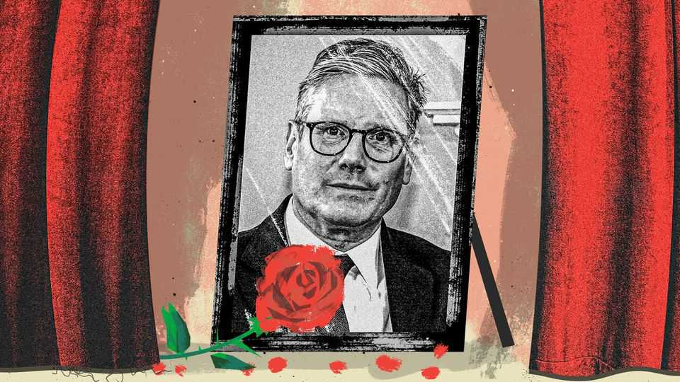

Sir Keir’s bucket list
The prime minister’s final few weeks sum him up
July 16th 2026

To see how someone lived, examine how they died. The final few weeks of Sir Keir Starmer’s strange political life say much about the man.
Outstanding affairs have been put in order. Sir Keir hammered out an increase in defence spending of £15bn ($20bn) over four years. The bulk of it was paid for with cuts to capital-spending budgets. Roads will go unbuilt. Energy projects will be canned. You could call it a “sticking-plaster” approach to public investment. Bad for business investment. Bad for living standards. Bad for growth. And, in the end, bad for the public finances as well. Those words may sound familiar. They are Sir Keir’s, when attacking the Conservatives in 2023 for doing what he has now done: raiding capital budgets to pay for spending elsewhere.
Others will have to deal with the inheritance. Even with the capital cuts, Sir Keir leaves behind about £5bn in unfunded spending for whoever is lucky enough to be Andy Burnham’s chancellor. When making way for someone in their own party, a prime minister should act as a sin-eater, choking down the consequences of the errors made in government, allowing their successor the benefit of purity. When it comes to defence spending, Sir Keir is less sin-eating than sin-chewing-and-spitting-into-a-napkin.
There was a final trip to Paris. Where else? Sir Keir was hosted by Emmanuel Macron at a meeting of the “coalition of the willing” of Ukraine allies. The French president led plaudits and awarded him the Légion d’honneur as a sign of the improved relations between both countries. If patriotism is the last refuge of a scoundrel, foreign policy is the last refuge of an unsuccessful prime minister. Sir Keir, more than any recent occupant, loved it, attracting plaudits for deft diplomacy even when pilloried at home.
Beneath the diplomatic pomp, personal relationships matter less than many assume. Where Britain was useful, it was welcomed. The coalition of the willing would have been far less potent without Britain, which is still one of only two serious hard powers in western Europe. Where Britain was weak, it was bullied. Under Sir Keir, Britain struggled to win concessions from the eu—often because of the man handing over the Légion d’honneur to a beaming prime minister.
Back in London, Sir Keir gathered the people he always spoke for: victims. He saw politics through their eyes. On a warm afternoon on July 14th, he welcomed a collection of them to the Downing Street garden: one mother whose son was killed by a ninja sword, and another whose child perished in the Manchester Arena attacks in 2017. Also in attendance were parents of those killed in the Hillsborough disaster, in which 97 Liverpool Football Club fans died due to police incompetence before being slandered by a malevolent state.
Thanks to Sir Keir’s government, each now has a law named after their tragedies. For a man with few guiding principles, victims provided a moral map. The job of the Labour Party was “to look directly into the eyes of their suffering”, said Sir Keir. It is a humane response. But governing is not a humane job. Was banning ninja swords, already illegal to carry in public, a good use of legislative time? Is it proportionate to require a church hall to have an anti-terror plan? Will the “duty of candour” that the Hillsborough law introduces lead to openness, or to public servants becoming strategically uninformed about brewing trouble? A government must be clear-eyed, and grief makes people blind.
Cabinet ministers gathered for the final time on July 15th to send off a prime minister regarded by all but a few of them with contempt. They gave him a carriage clock—the symbol of an unthinking retirement gift. Still, it was a serene end. Good prime ministers tend to enjoy messy departures, argued Andrew Adonis, a former Labour minister, in a note to his then soon-to-be-departing boss, Sir Tony Blair. By contrast, Sir Keir has enjoyed a form of political euthanasia, put out of his misery by people he once considered friends. It is a dignity he did not extend to the public after he failed to pass a euthanasia bill, although it was one of the few things in which he sincerely believed.
Since Sir Keir’s fate has been settled officially for nearly a month (and unofficially for far longer), the prime minister has had time to offer interviews about his legacy. What policy does he want to be remembered for? Why, scrapping the two-child limit on benefits, of course, which lifted hundreds of thousands of children out of poverty. It is the sort of thing Labour should do. Unmentioned was the fact Sir Keir fought such a move for almost two years, even sacking seven mps for calling for it. It could have been announced on day one. Instead, it happened on day 509.
Sir Keir would have spent his final few moments in power 5,500km away in New Jersey, had Argentina not ended England’s hopes in the World Cup. By a remarkable coincidence, the football-mad prime minister had picked the day after the final as the earliest possible moment for the handover. Sir Keir began his reign in a furore about free football tickets he enjoyed while leader of the opposition. Why change the habit? England in a World Cup final would have been more justifiable than Arsenal away at Newcastle.
Some prime ministers work to the last second. Others simply let death take them. In one of those final interviews, Sir Keir was asked for his proudest moment. He chose walking up Downing Street the day after the general election. It was winning for the sake of winning. Why he wanted the job, Britain never quite learned. Sir Keir composed his own epitaph before he had even come to power, during one of Labour’s interminable internal rows: “There is no such thing as Starmerism, and there never will be.” How right he was.■
Subscribers to The Economist can sign up to our Opinion newsletter, which brings together the best of our leaders, columns, guest essays and reader correspondence.